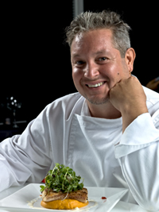

In 1997, Master Chef Pierre DeBois moved to Utah from New York where he owned and managed a small restaurant called Ma Maison (My Home). His restaurant specialized in French Nouvelle cuisine.

The Challenge: Once in Salt Lake City, Pierre realized that the average Utahan doesn't have much appreciation for high cuisine. Pierre and his family were invited to a neighborhood block party one summer and it was there he had his first encounter with Native Cooking of Utah.
Pierre noticed how much the locals enjoyed the items brought to this pot luck dinner. They often went back for seconds or thirds. How could he capture this enthusiasm for eating and translate it into his own cooking?

In 2010, Pierre DeBois began gathering recipes for an online cookbook titled: Native Cooking of Utah. Everywhere he could, he begged, borrowed or stole the secret recipes of popular Utah cooks.
The web site for Native Cooking of Utah organizes the recipes by area of the state. For example, salt water taffy from Salt Lake City, and Bear Lake Raspberry ice cream from Bear Lake.

Native Cooking of Utah has become one of the most popular cooking sites in the Western U.S. with over 10,000 hits per week. Chef Pierre DeBois has plans to expand the site to include cooking utensils and kitchen accessories. You will find these added treats online after January, 2013.
"Master Chef Pierre DeBois captures the Native Cooking of Utah in his online web site. Browsing his web site is like having a family reunion where everyone brings along their favorite recipes and shares them."
-- Good Eating Magazine --
Site Number 66: Whether you are living in Utah or just visiting, you can cook like a true native if you use Native Cooking of Utah as your guide. Reap praise from strangers and surprise your family with your down home cooking.